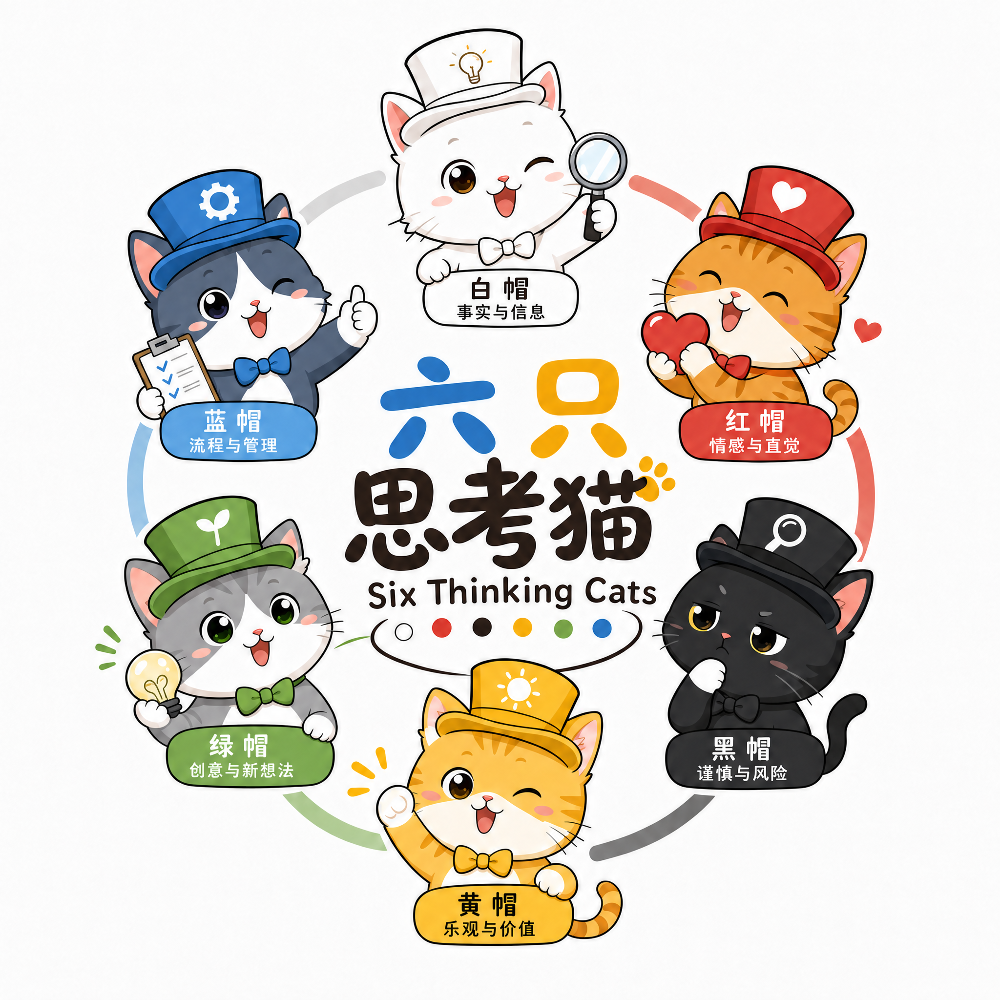
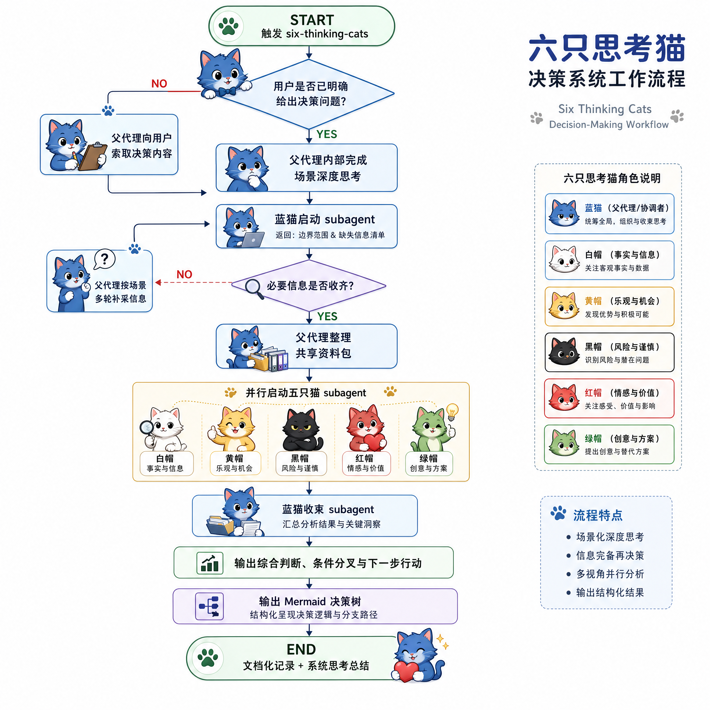

核心概念：六只思考猫 | 六顶思考帽 | 苏格拉底式探询
六只思考猫把六顶思考帽与苏格拉底式探询落成一套面向个人决策的分析协议，以父代理编排、五猫并行、蓝猫收束的默认模型，把模糊纠结收敛为带条件分叉、下一步行动和 Mermaid 决策树的结论。
这不是应用代码仓库，也不是通用框架包，而是一个面向个人决策场景的提示词与参考资料仓库；核心交付物是 SKILL.md，README 只负责说明这个技能是什么、适合什么场景、该从哪里开始看。
六顶思考帽简介（Six Thinking Hats, Briefly）
- • 六顶思考帽由 Edward de Bono 提出，核心不是给人贴人格标签，而是强制一次只用一种思维方式，避免事实、情绪、风险和创意混杂。
- • 本仓库把这套方法工程化成六只思考猫，并用苏格拉底式探询完成前置信息采集；更完整的理论背景见 references/framework.md。
安装与更新（Install / Update）
如果你通过 skills CLI 使用这个技能，可直接从仓库安装：
npx skills add nanzhipro/six-thinking-cats
安装名是 six-thinking-cats，更新时直接使用该名字：
npx skills update six-thinking-cats
需要跳过交互确认时加 -y，需要安装到全局作用域时加 -g。
适用场景（Best For）
- • 工作决策：换工作、职业转型、是否接项目。
- • 生活决策：搬家、买房、换车、教育选择。
- • 商业决策：创业、合作、产品方向、业务判断。
- • 投资决策：资产配置、标的选择、风险取舍。
- • 模糊纠结：用户没有明确选项，但明确表达了犹豫、卡住、拿不定主意。
典型使用场景
- • “我要不要辞职去创业？”
- • “现在该不该换工作，还是再等半年？”
- • “这个合作能不能接，风险会不会太大？”
- • “我有两个方案都不完美，怎么比较才不失真？”
- • “我其实还没想清楚选项，但就是一直下不了决心。”
如果你的问题接近上面这些真实决策，这个技能就适合直接上手。
实际运行示例（Example）
- • 仓库已包含一份完整运行样例：example/特斯拉换油车.md。
- • 这个样例展示了从决策问题、六猫分析、蓝猫收束到 Mermaid 决策树的完整交付链路。
- • 示例问题是“要不要把特斯拉换成油车”，当前结论是不换，先完成低成本验证，再决定是否重启换车判断。
工作机制与约束（How It Works）

- • 父代理先明确决策、完成场景深度思考，并以每轮最多 2 问的方式补齐信息。
- • 五只猫共享同一份资料包并并行分析，但彼此隔离，不能相互读取输出。
- • 蓝猫收束是唯一允许跨猫整合的节点，负责给出综合判断、待验证分歧与下一步行动。
- • 最终结果必须包含 Mermaid 决策树，并归档到本地 Markdown 文档。
- • 详细工作流、输入输出合同和不可协商约束见 SKILL.md，探询原则见 references/socratic-questioning.md。
视觉命名（Visual Language）
这个技能用统一的“emoji + 猫名 + 职责”命名规约保持阶段辨识度；宿主界面的真实颜色不可直接配置。
- • 🔵 蓝猫启动：定义边界、时间窗口、缺失信息清单。
- • ⚪ 白猫事实：整理事实、假设和信息缺口。
- • 🟡 黄猫机会：盘点价值、收益和上行空间。
- • ⚫ 黑猫风险：识别风险、脆弱点和退路。
- • 🔴 红猫直觉：表达情绪、直觉和隐藏顾虑。
- • 🟢 绿猫方案：提出新路径、试验和组合方案。
- • 🔵 蓝猫收束：跨猫整合、阶段性结论、待验证分歧、下一步行动。
进一步阅读
- • 想直接使用这个技能，优先看 SKILL.md。
- • 想理解六顶思考帽的整体理论，再看 references/framework.md。
- • 想了解提问与信息采集方式，可看 references/socratic-questioning.md。